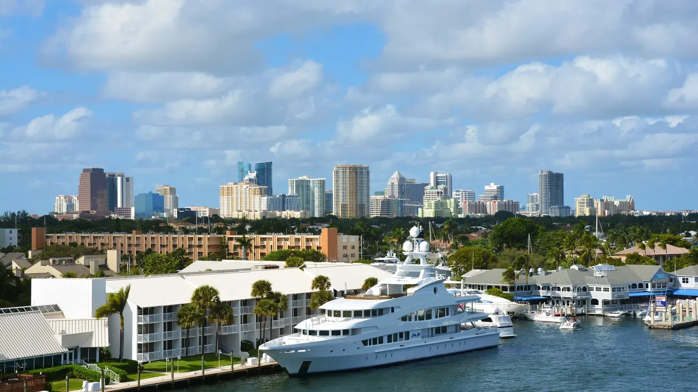

Em Fort Lauderdale, as casas à venda incluem casas na beira de canais e do Intracoastal, bairros residenciais tradicionais e um grande mercado de apartamentos em prédios altos. É a maior cidade da nossa lista, uma das mais caras e a que tem mais risco de enchente e ressaca de tempestade, então seguro e estado do prédio pesam tanto quanto o preço. O Rui Cunha, corretor que atende em português, tem escritório em Coral Springs e ajuda compradores em todo o condado de Broward, incluindo Fort Lauderdale.
Como é morar em Fort Lauderdale
Fort Lauderdale é a maior cidade deste guia. O escritório de pesquisa econômica e demográfica da Flórida estimou a população em 189.583 habitantes em abril de 2024 (Florida EDR). A vida gira em torno da água: canais, Intracoastal e a ilha definem onde as pessoas moram e quanto pagam.
Para famílias brasileiras
Não encontramos uma fonte confiável sobre o tamanho da comunidade brasileira em Fort Lauderdale, então não vamos inventar. A presença brasileira mais conhecida do condado fica mais ao norte, em Pompano Beach, Deerfield Beach e Coconut Creek (WLRN). Quem quer morar ou investir em Fort Lauderdale conta com o Rui para explicar tudo em português, do seguro às regras do prédio. Se você ainda não tem Social Security, veja o financiamento com ITIN, sempre sujeito à aprovação do banco.
Bairros
Uma imobiliária local cita estes entre os bairros conhecidos da cidade (Palm Paradise Realty): Las Olas Isles, Victoria Park, Rio Vista, Coral Ridge e Harbor Beach.
Cada bairro tem uma faixa de preço ampla, conforme o imóvel esteja na água, a largura do canal e a idade da casa. O Rui levanta as vendas recentes rua por rua.
Mercado imobiliário em Fort Lauderdale
Segundo o Redfin, o preço mediano de venda em Fort Lauderdale foi de cerca de US$ 582 mil nos três meses até maio de 2026, uns 18% acima do ano anterior (Redfin). Os imóveis levaram em média uns 106 dias para vender. Para apartamentos, o relatório da Miller Samuel do 4º trimestre de 2025 apontou mediana de cerca de US$ 415 mil, uns 6% acima do ano anterior, com cerca de 127 dias para vender; o mesmo relatório mostrou alta de uns 7,5% nas casas (Miller Samuel).
São números da cidade inteira. Um apartamento numa torre e uma casa num canal são mercados totalmente diferentes, e o preço varia muito por bairro e acesso à água. Peça ao Rui uma comparação atualizada das vendas recentes do que você está considerando.
Cuidados práticos: enchente, seguro e prédios altos
Enchente e ressaca. Fort Lauderdale tem o maior risco de enchente e ressaca entre as cidades que atendemos, por causa dos canais e da ilha. A nova forma de cálculo da FEMA aumentou mais o seguro nas áreas costeiras de Broward e Palm Beach (WLRN), e quem tem seguro pela Citizens vai precisar de cobertura contra enchente, exigência que entra aos poucos até 2027 (News4JAX). Antes de assinar, confira a zona de enchente, peça o certificado de elevação, se houver, e faça cotações reais de seguro. Na beira d'água, o seguro pode mudar muito o custo mensal.
Prédios altos. A lei de segurança de condomínios de 2022 exige inspeções em prédios de três andares ou mais (aos 30 anos, ou 25 se a prefeitura/condado exigir, depois a cada 10 anos — SB 154, 2023) e estudo de reservas estruturais com reservas financiadas (Rimkus). Há relatos de cobranças extras de US$ 10 mil a mais de US$ 100 mil (24-7 Press Release). O mercado de prédios altos de Fort Lauderdale é sensível a essas regras, então peça o estudo de reservas, o orçamento, os laudos de inspeção e o histórico de cobranças.
Homestead. Se for sua residência principal, pergunte a um contador sobre a isenção homestead. Segunda casa e não residentes não têm direito.
Escolas
Fort Lauderdale é atendida pelas escolas públicas de Broward (Broward County Public Schools). Use a ferramenta de busca de escolas do distrito para confirmar a escola de cada endereço e consulte as notas no site do Departamento de Educação da Flórida.
Como se locomover
Fort Lauderdale fica ao sul de Pompano Beach, e muita gente se desloca entre as duas. Trânsito e pontes levadiças mudam bastante o tempo de viagem, então teste o trajeto no horário de pico.
Comprar com o Rui em Fort Lauderdale
O Rui trabalha com imóveis no sul da Flórida desde 2003, como mortgage broker, broker e General Contractor licenciado, o que ajuda a avaliar uma casa antiga na beira d'água ou o plano de reformas de um prédio. Ele ajuda você a comprar casa na Flórida, a entender o financiamento com ITIN ou a vender seu imóvel. Use a calculadora de financiamento incluindo impostos e seguro, e compare com Pompano Beach e Deerfield Beach.
Perguntas frequentes
Qual o preço médio de um imóvel em Fort Lauderdale?
Segundo o Redfin, a mediana foi de cerca de US$ 582 mil nos três meses até maio de 2026. A Miller Samuel apontou mediana de uns US$ 415 mil para apartamentos no 4º trimestre de 2025. Imóveis na beira d'água podem custar bem mais, então compare as vendas recentes do bairro que você quer.
O seguro contra enchente pesa muito em Fort Lauderdale?
Pesa bastante. A cidade tem canais, Intracoastal e ilha, então muitos imóveis ficam em zona de maior risco. Confira a zona de enchente e faça cotações antes de assinar, porque o seguro muda o quanto você consegue pagar.
O que conferir antes de comprar apartamento em Fort Lauderdale?
Peça o estudo de reservas, o orçamento atual, os laudos de inspeção e o histórico de cobranças extras. Prédios altos perto da costa seguem regras rígidas de inspeção e reservas, e quem paga as reformas obrigatórias são os proprietários.
Dá para comprar em Fort Lauderdale sem Social Security?
Muitos compradores usam o financiamento com ITIN, sempre sujeito à aprovação do banco. Veja o guia de financiamento com ITIN ou fale com o Rui.
Fale com o Rui
Avaliando casa ou apartamento em Fort Lauderdale? Peça ao Rui uma comparação atualizada das vendas recentes.